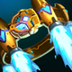
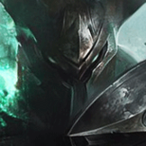

核心裝備
 峽谷製造者
峽谷製造者生命、法強、技能加速與長團吸血最符合正面鬥士定位。

海克斯科技火箭腰帶補短位移與爆發，讓死之爪或大絕更容易碰到後排。
 黎安卓的折磨
黎安卓的折磨對多人與高生命前排持續灼燒，ARAM 長團收益高。
 死亡之帽
死亡之帽中後期大幅放大技能與被動傷害。
 雅瑪蘭守護像
雅瑪蘭守護像90% 承傷再配雙抗，後期正面站得非常久。

Mordekaiser · 90% 承傷／死亡領域隔離型 AP 鬥士
先在正面打出被動與二技護盾，再找大絕目標。大絕不一定要抓最肥的敵人：把敵方唯一前排、保排輔助或高控制角色拉走，有時比硬抓射手更能讓隊友贏四打四。
本站評級理由：魔鬥凱薩在 ARAM 能靠被動範圍傷害與二技護盾正面磨血，大絕還能直接把敵方最重要的輸出或保排角色拉出五人團戰。標準 ARAM 目前有 90% 承傷，讓他更容易撐到被動啟動。
Riot 6.0b 標準 ARAM：魔鬥凱薩承受傷害 100%→90%。7.0d 又為 1 技新增 120% 額外攻擊係數，使大絕竊取到的攻擊力也能轉化為傷害。
生命、法強、技能加速與長團吸血最符合正面鬥士定位。

補短位移與爆發，讓死之爪或大絕更容易碰到後排。
對多人與高生命前排持續灼燒，ARAM 長團收益高。
中後期大幅放大技能與被動傷害。
90% 承傷再配雙抗，後期正面站得非常久。

面對普攻與物理陣容最穩。

三級鞋進一步提高近戰承傷。

被動、技能與普攻可穩定疊滿長團。

參與擊殺後回復生命與資源，提高 ARAM 連續團戰續航。

低血量時提升反打傷害。

提高普攻疊被動與持續輸出速度。

第一輪被集火時減傷。

補死之爪、大絕或關鍵一技角度。

死亡領域內與正面長團保持貼身。
1 技 > 3 技 > 2 技
開局三個基礎技能各 1 級，之後主 1、次 3；大絕能點就點。
先靠一技與三技疊被動，不要沒有二技能量就直接吃五人傷害。90% 承傷讓你能換血，但不代表可以無視控制。
峽谷製造者成形後站前排磨血。大絕優先排除會阻止我方輸出的角色，進領域後利用火箭腰帶與鬼步維持貼身。
團戰前先決定大絕目標。若敵方有超肥核心，確認自己能拖住或擊殺再拉；否則拉走坦克／保排讓隊友先贏四打四通常更穩。
 虛空之杖
虛空之杖替換死亡之帽或防裝，補百分比法穿。
 水仙三叉戟
水仙三叉戟替換火箭腰帶或黎安卓，快速削弱護盾。
 女妖面紗
女妖面紗替換一件輸出裝，以法術盾提高開大成功率。
看遊戲卡片下方分類 → 點相同分類 → 看左側 S+／S／A。
一、三技能與被動都是主要傷害來源，技能循環能直接提高貼身壓力。
魔鬥需要高生命與雙防站在敵陣，體型類能直接提高領域內單挑容錯。
二技能能提供大額護盾，護盾免控與護盾真傷都很適合近身反打。
施放大絕無敵、保命重置與高生命類單卡都能提高領域內勝率。
被動與技能能持續造成範圍傷害，部分雷霆增幅可增加長團輸出。
沒有真正位移，跑速是大絕領域內黏住遠程目標的重要手段。
v80.13.0 ARAM A 第四批：魔鬥凱薩套用標準 ARAM 90% 承傷，並同步 7.0d 一技新增額外 AD 係數；採 7.2a 峽谷製造者核心。
ARAM 使用獨立於召喚峽谷的資料集；本站會把官方模式平衡、單線 5v5 特性與出裝／符文適配分開判斷，而不是直接複製峽谷配置。